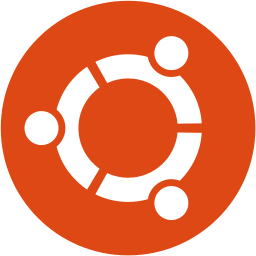
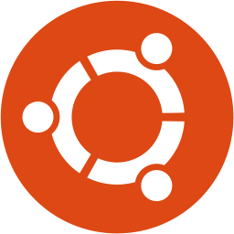
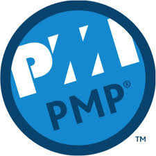
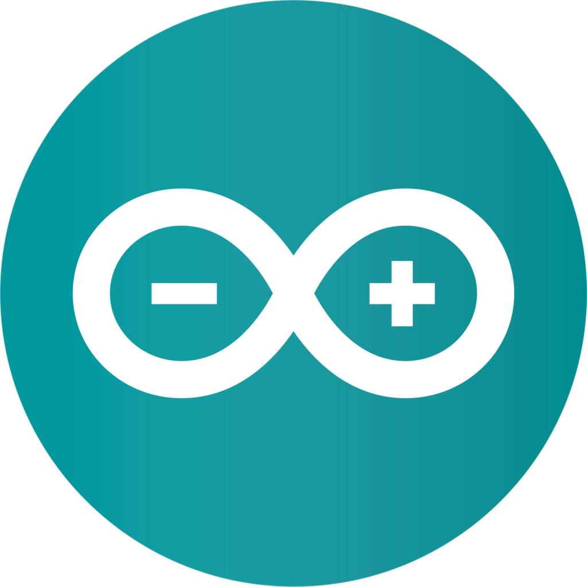

Hola!!!! Soy José Emanuel Castelán
¡Bienvenidos a mi portafolio!
Permíteme presentarme. Soy Ingeniero en Informática y Maestro en Ingeniería Industrial de profesión.
Siempre me ha fascinado la programación tanto consola como Web. Linuxero como cualquier informático debe de ser.
La vida me ha llevado a tener experiencia en administración de proyectos, así como la telefonía IP en la nube
Mis skills
-
Lenguaje de programación Python. Frameworks Click y Django.6 años

-
Lenguaje de programación Java (GUI y Web mediante JSP)10 años
-
Administración de servidores Linux (Distribuciones Ubuntu Server y CentOS Server) y desarrollo Bash8 años
 
 
-
Diseño Web en HTML5 y framework Bootstrap4 años


-
Lenguaje SQL (aplicado a sistemas manejadores SQL Server, MySQL, PostgreSQL, SQLite)10 años

-
Tópicos de administración de proyectos mediante metodología PMP 3 años
-
Protocolo SIP, configuración de telefonía IP y administración Softswitch3 años
-
Administración de versiones Git1 año

-
Diseño de circuitos con microprocesadores Arduino 1 año

Mis proyectos relevantes
Grandes empresas con las que he colaborado
Ingeniero Softswitch (2016 - presente)
Ingeniero O&M Switch (2011 - 2015)
Administración de plataformas de telefonía VoIP, TDM
Implementación de plataformas de telefonía IP en la nube y UCaaS
Desarrollo de aplicaciones backend y Web de apoyo a troubleshotting de servicios de voz y aprovisionamiento
Ingeniero Q&A NOC (2015 - 2016)
Auditoría de documentación de ordenes de nuevos servicios de voz y datos
Administración de plataformas "Network Performance Monitor" sobre la red de Internet y MPLS
Desarrollo de aplicaciones para automatización de reportes de cumplimiento de SLA's de servicios de datos
Analista - Programador Java (2010 - 2011)
Programación de interfaces Web y locales de conciliación de accesos a sistemas corporativos
Control corporativo de solicitudes de acceso a sistemas corporativos